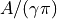

hyperspy._components.lorentzian module¶
-
class
hyperspy._components.lorentzian.Lorentzian(A=1.0, gamma=1.0, centre=0.0, module='numexpr', **kwargs)¶ Bases:
hyperspy._components.expression.ExpressionCauchy-Lorentz distribution (a.k.a. Lorentzian function) component.
![f(x)=\frac{A}{\pi}\left[\frac{\gamma}{\left(x-x_{0}\right)^{2}
+\gamma^{2}}\right]](../_images/math/1a63cca22915e360295ca310301471c96875c5f3.png)
Variable
Parameter

A

gamma

centre
- Parameters
A (float) – Height parameter, where  is the maximum of the peak.
gamma (float) – Scale parameter corresponding to the half-width-at-half-maximum of the peak, which corresponds to the interquartile spread.
centre (float) – Location of the peak maximum.
**kwargs – Extra keyword arguments are passed to the
Expressioncomponent.
For convenience the fwhm and height attributes can be used to get and set the full-with-half-maximum and height of the distribution, respectively.
Create a component from a string expression.
It automatically generates the partial derivatives and the class docstring.
- Parameters
expression (str) – Component function in SymPy text expression format with substitutions separated by ;. See examples and the SymPy documentation for details. In order to vary the components along the signal dimensions, the variables x and y must be included for 1D or 2D components. Also, if module is “numexpr” the functions are limited to those that numexpr support. See its documentation for details.
name (str) – Name of the component.
position (str, optional) – The parameter name that defines the position of the component if applicable. It enables interative adjustment of the position of the component in the model. For 2D components, a tuple must be passed with the name of the two parameters e.g. (“x0”, “y0”).
module ({"numpy", "numexpr", "scipy"}, default "numpy") – Module used to evaluate the function. numexpr is often faster but it supports fewer functions and requires installing numexpr.
add_rotation (bool, default False) – This is only relevant for 2D components. If True it automatically adds rotation_angle parameter.
rotation_center ({None, tuple}) – If None, the rotation center is the center i.e. (0, 0) if position is not defined, otherwise the center is the coordinates specified by position. Alternatively a tuple with the (x, y) coordinates of the center can be provided.
rename_pars (dictionary) – The desired name of a parameter may sometimes coincide with e.g. the name of a scientific function, what prevents using it in the expression. rename_parameters is a dictionary to map the name of the parameter in the expression` to the desired name of the parameter in the Component. For example: {“_gamma”: “gamma”}.
compute_gradients (bool, optional) – If True, compute the gradient automatically using sympy. If sympy does not support the calculation of the partial derivatives, for example in case of expression containing a “where” condition, it can be disabled by using compute_gradients=False.
**kwargs – Keyword arguments can be used to initialise the value of the parameters.
Note
As of version 1.4, Sympy’s lambdify function, that the
Expressioncomponents uses internally, does not support the differentiation of some expressions, for example those containing a “where” condition. In such cases, the gradients can be set manually if required.Examples
The following creates a Gaussian component and set the initial value of the parameters:
>>> hs.model.components1D.Expression( ... expression="height * exp(-(x - x0) ** 2 * 4 * log(2)/ fwhm ** 2)", ... name="Gaussian", ... height=1, ... fwhm=1, ... x0=0, ... position="x0",)
Substitutions for long or complicated expressions are separated by semicolumns:
>>> expr = 'A*B/(A+B) ; A = sin(x)+one; B = cos(y) - two; y = tan(x)' >>> comp = hs.model.components1D.Expression( ... expression=expr, ... name='my function') >>> comp.parameters (<Parameter one of my function component>, <Parameter two of my function component>)
-
estimate_parameters(signal, x1, x2, only_current=False)¶ Estimate the Lorentzian by calculating the median (centre) and half the interquartile range (gamma).
Note that an insufficient range will affect the accuracy of this method.
- Parameters
- Returns
- Return type
Notes
Adapted from gaussian.py and https://en.wikipedia.org/wiki/Cauchy_distribution
Examples
>>> g = hs.model.components1D.Lorentzian() >>> x = np.arange(-10, 10, 0.01) >>> data = np.zeros((32, 32, 2000)) >>> data[:] = g.function(x).reshape((1, 1, 2000)) >>> s = hs.signals.Signal1D(data) >>> s.axes_manager[-1].offset = -10 >>> s.axes_manager[-1].scale = 0.01 >>> g.estimate_parameters(s, -10, 10, False)
-
property
fwhm¶
-
property
height¶
-
hyperspy._components.lorentzian._estimate_lorentzian_parameters(signal, x1, x2, only_current)¶